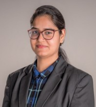

DBT-MK Bhan Young Research Fellow (2023-Present)
Research on DEAD Box Helicase at Ram Lal Anand College.

Dr. Nidhi Verma
Assistant Professor
Department of Microbiology
Ram Lal Anand College, University of Delhi
nidhiverma@rla.du.ac.in
New Delhi-110021, India
Researcher ID: rid97407
Plant-microbe interaction, Serendipita indica and sulfur transfer.
RNA biology, Fungal genetics, Host-microbe interaction and RNA-based interactions.
Biochemistry, Mycology, Bacteriology, Molecular Microbiology, and Industrial applications.
Research on DEAD Box Helicase at Ram Lal Anand College.
Transcription Regulation Group, International Center for Genetic Engineering and Biotechnology (ICGEB).
International Center for Genetic Engineering and Biotechnology.
McGovern Medical School, UTHealth, Houston, Texas, USA.
Conference attended:
FDP/FIP/Professional training/Workshop attended